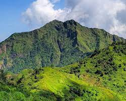

Gunung Muria adalah gunung berapi kerucut di Jawa Tengah, Indonesia. Terletak di antara Kabupaten Kudus, Jepara, dan Pati. Dengan ketinggian sekitar 1.602 meter di atas permukaan laut, Gunung Muria merupakan destinasi populer untuk pendaki gunung yang menawarkan pemandangan alam yang memukau.Terdapat Banyak Peninggalan Bersejarah Berdasarkan hasil inventarisasi BPCB (d/h BP3) Jawa Tengah tahun 1988, di lereng utara Gunung Muria (Jepara) dan di bagian lereng selatannya (Kudus) dijumpai beberapa peninggalan arkeologi. Contohnya, di lereng utara gunung terdapat Candi Angin 1 dan Candi Angin 2, sebuah bangunan berundak yang ada di puncak bukit. Dan 4 buah menhir.
